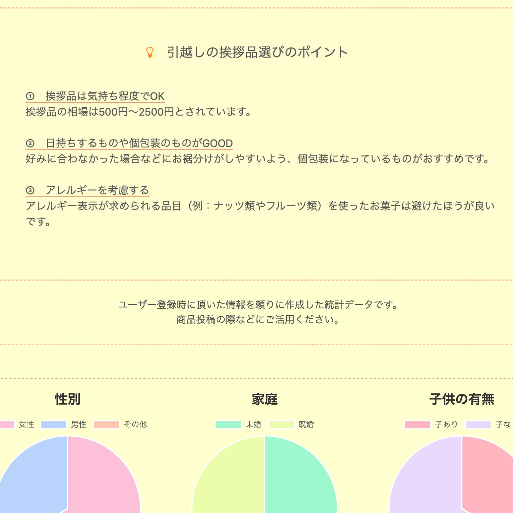
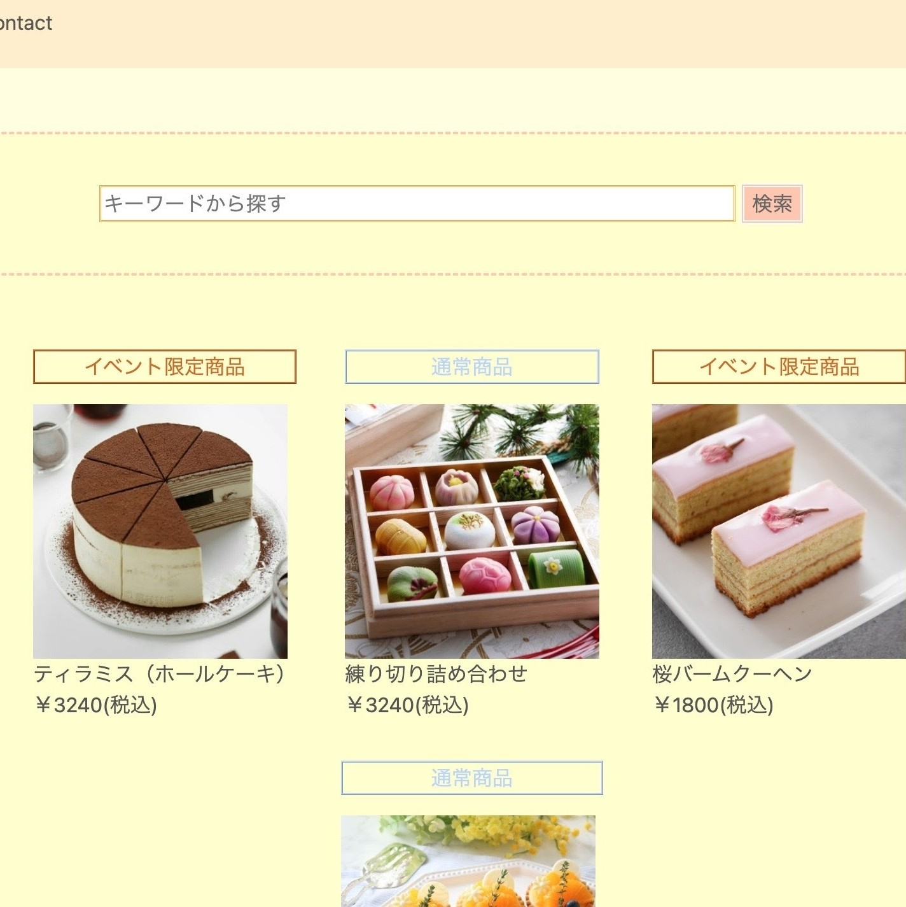

Temiyage（手土産に関する情報共有アプリ）
開発環境
Ruby / Ruby on Rails / MySQL / GitHub / Heroku / Visual Studio Code / Trello
-
概要
制作時間 180時間 URL https://temiyage.herokuapp.com/ -
動作テスト
企業側テスト用アカウント
mail test@gmail.com PASS test1111 -
一般側テスト用アカウント
mail sample@gmail.com PASS sample1111
OUTLINEアプリケーションの概要
オリジナルアプリケーションとして百貨店や駅中で売っている手土産の商品比較・口コミ投稿が出来るサービスを開発しました。 主な機能は、ユーザー登録機能、記事投稿機能、投稿記事の削除編集機能、お気に入り登録機能、コメント機能、お問い合わせ機能です。
ユーザーの新規登録をすると、商品記事を閲覧したり記事をお気に入りに登録したりすることが出来ます。商品記事以外にも手土産選びの際に役立つ豆知識を載せたページや地域の手土産に関してユーザー間で情報共有が出来るページなども用意しました。
商品記事に関して当初は一般ユーザーも投稿が出来るようなサービスを考えていましたが、品質が落ちてしまうことが懸念されたため投稿権限を企業側のみと絞る事にしました。
しかし、ユーザー参加型コンテンツでないとサービスとしての面白みが欠けてしまうため、口コミ機能や地域に関する情報発信機能をつける事で補いました。
-
開発に至った経緯
当アプリケーションは2つの立場から考えて開発するに至りました。
１つ目は消費者側の立場です。
私が洋菓子メーカーに勤めていた際、他社の商品研究をするにおいて情報収集に非常に苦戦しました。 まとめサイトには話題の商品しか載っておらず、企業HPにはその企業の商品しか載っていないため他社商品との比較が出来ない。楽天やAmazonを例とする通販サイトで商品比較は可能ですが、配送を基本としているため記載されていない商品も多かったです。
以上の経験から消費者側からしてみても、ひとつのサイトで様々な企業の商品比較ができるようなサービスがあったら良いなと思いました。２つ目は企業側の立場です。
私の働いていた洋菓子店は百貨店のインスタグラムで新商品の告知をしていたのですが、館のSNSでは食品だけでなく衣類やイベント情報なども扱うため、どうしてもPRが埋もれてしまいがちでした。 また、小さな会社では自社HPを作成及び運営するのが難しいうえ、作っても名が通っていないと中々見つけて貰えないという課題を抱えているように感じました。以上を踏まえて、消費者側の『様々な企業の商品比較をひとつのサイトで完結させたい』、企業側の『商品PRの場を増やしたい』といった双方の課題を解決するべく当アプリケーションを開発することにしました。
-
開発で工夫したこと
１つ目は『消費者と企業』というように、２つの立場に立って実装を行った点です。
具体的には「消費者が情報集めに苦戦する事のないよう（１つのサイトで情報収集を完結できるよう）手土産選びに役立つ豆知識を載せたページを作ったこと」「企業側がユーザーの背景や想いに沿ったコンテンツが作れるよう、ユーザー情報をグラフに変換し提供したこと」などが挙げられます。2つ目は家族や友人を含めて他者に自分の作ったアプリケーションを見てもらい、頂いた指摘を積極的に取り入れるようにした点です。
多くのユーザーに使って貰うことを前提としている為、利用者側の目を大切にしました。結果として自分では気付かなかった視点での指摘も多くあり、サービスをより良いものへと変えていく事が出来ました。以上の点を踏まえて、ユーザー目線を意識した開発に繋げることが出来たと感じております。
-
今後実装したいと思っていること
現状、考えている追加機能は以下の２点です。
１つ目は検索機能の充実化です。商品を様々な視点から比較出来るように、キーワードだけではなく商品の特徴や価格帯での検索も可能にしたいと考えています。
２つ目はランキングの表示です。投稿数が増えてくると一覧ページも見辛くなってきてしまうと思います。その為、口コミ数やいいね数でのランキング結果も提供したいと考えています。